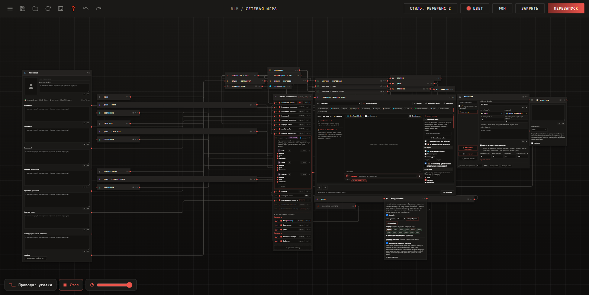

Душа
Модель ведёт дневник, состояние сцены, факты мира и психологию персонажей
Карточка, промт, лорбуки, память и модель — отдельные ноды на холсте. Видно, что уходит модели и почему пришёл такой ответ.
Модель ведёт дневник, состояние сцены, факты мира и психологию персонажей
Сцены сжимаются в главы, главы — в арки и эпосы
Заворачивает подлиз, безволие, игру за игрока и читы
Исход брошен до сцены — модель не может его подменить

Один репозиторий, две сборки. Ключей и карточек внутри нет — вписываешь свои.
Полный набор, включая озвучку.
git clone https://github.com/Leosmaru/rlm cd rlm/pc/server && npm install --omit=dev
Запуск — «Запустить RLM.bat». Холст: 127.0.0.1:8100/rlm/
Скачать ZIPВсё то же, кроме голоса.
pkg install -y git nodejs-lts git clone --depth 1 https://github.com/Leosmaru/rlm cd rlm/termux && ./install-termux.sh
Дальше запуск одной командой: rlm
Инструкция